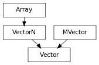

A 3 dimensional vector class that wraps Maya’s api Vector class
>>> from pymel.all import *
>>> import pymel.core.datatypes as dt
>>>
>>> v = dt.Vector(1, 2, 3)
>>> w = dt.Vector(x=1, z=2)
>>> z = dt.Vector( dt.Vector.xAxis, z=1)
>>> v = dt.Vector(1, 2, 3, unit='meters')
>>> print v
[1.0, 2.0, 3.0]
u.angle(v) <==> angle(u, v) –> float Returns the angle (in radians) between the two vectors u and v Note that this angle is not signed, use axis to know the direction of the rotation
alias of MVector
Wrap the Vector api assign method
u.axis(v) <==> angle(u, v) –> Vector Returns the axis of rotation from u to v as the vector n = u ^ v if the normalize keyword argument is set to True, n is also normalized
u.cotan(v) <==> cotan(u, v) –> float : cotangent of the a, b angle, a and b should be MVectors
cross product, only defined for two 3D vectors
The Vector/FloatVector/Point/FloatPoint/Color data
dot product of two vectors
Wrap the Vector api get method
Returns true if both arguments considered as Vector are equal within the specified tolerance
Returns true if both arguments considered as Vector are parallel within the specified tolerance
Return the length of the vector
Return a normalized copy of self
Performs an in place normalization of self
u.rotateBy(*args) –> Vector Returns the result of rotating u by the specified arguments. There are several ways the rotation can be specified: args is a tuple of one Matrix, TransformationMatrix, Quaternion, EulerRotation arg is tuple of 4 arguments, 3 rotation value and an optionnal rotation order args is a tuple of one Vector, the axis and one float, the angle to rotate around that axis in radians
u.rotateTo(v) –> Quaternion Returns the Quaternion that represents the rotation of the Vector u into the Vector v around their mutually perpendicular axis. It amounts to rotate u by angle(u, v) around axis(u, v)
Return the square length of the vector
Returns the vector transformed by the matrix as a normal Normal vectors are not transformed in the same way as position vectors or points. If this vector is treated as a normal vector then it needs to be transformed by post multiplying it by the inverse transpose of the transformation matrix. This method will apply the proper transformation to the vector as if it were a normal.